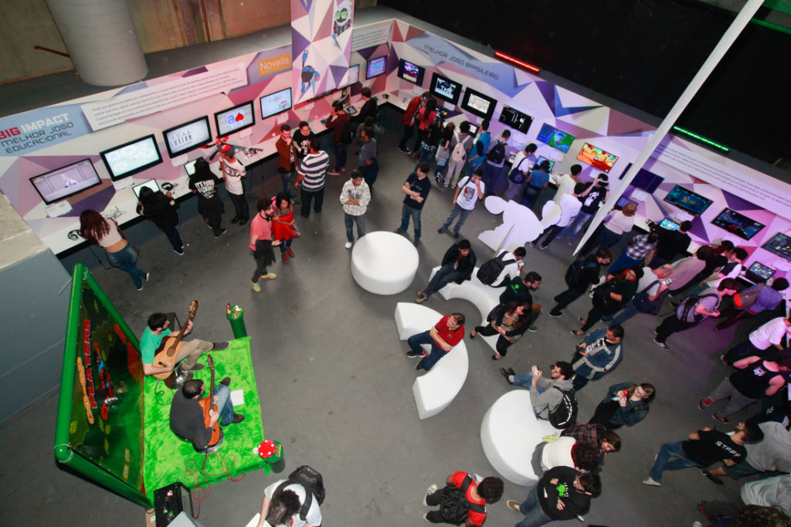
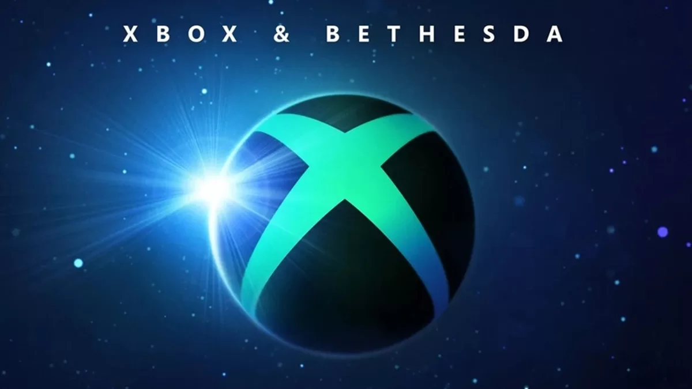

Campanhas
Game Over Eventos, Gamesco, Festival Retro Games Brasil 2022, Xbox Showcase
Game Over Eventos

A Game over concentra esforços no mercado de jogos independentes, sendo o maior evento do tipo na América Latina. A programação divide-se entre premiações para o mercado de jogos independentes, workshops e rodas de negócios entre desenvolvedores e publicadoras. Neste ano, os desenvolvedores brasileiros poderão participar de uma Game Jam online de 48 horas, que será realizada em parceria entre a Game Over e a Magalu. A competição acontecerá entre os dias 24 e 26 de junho. A venda de ingressos para o evento começará a partir do dia 16 de maio. Os ingressos para a área BIG Play, com experimentação de jogos e palestras, serão vendidos por lotes, com preços a partir de R$ 46,40.
A Game Over Festival de 2022 acontecerá de 7 a 10 de julho, no São Paulo Expo, na Zona Sul da capital paulista. Neste ano, estão confirmadas participações de marcas como PlayStation, Xbox, Google e Tencent, além de convidados como Takashi Tokita, designer líder de Final Fantasy, e David K. Lam, diretor de arte da Riot Games A 10ª edição do festival marca a volta dos eventos presenciais após dois anos de realização virtual por conta da pandemia da covid-19. No entanto, a feira ainda contará com uma edição virtual paralela, útil para pessoas que não moram em São Paulo. Não foi informado se o evento virtual terá uma programação exclusiva ou apenas transmitirá as mais de 100 palestras presenciais confirmada
*** Participações Patrocinadas ***
GAMESCO

Após dois anos em formato online, a Gamescom volta em 2022 para uma edição híbrida. O evento deste ano contará com apresentações presenciais e online. O trecho presencial da Gamescom 2022 acontece entre os dias 24 e 28 de agosto em São Paulo. Para a porção digital, a organização promete uma programação extensa com transmissões da indústria. O calendário e as participações ainda não foram divulgados.s.
Retro Games Brasil 2022
Com foco em jogos clássicos e retrô modernos, o Festival Retro Games Brasil acontecerá nos dias 27 e 28 de maio, no Centro de Convenções do Centro Universitário Senac, em São Paulo. Apelidado de Festival RGB, o evento tem como objetivo reviver lembranças de jogadores mais experientes com estações de jogos com consoles antigos, máquinas de arcade e o melhor dos jogos retrô modernos. Na edição de 2022, os jogadores poderão experimentar, em primeira mão, Mutant Ninja Turtles: Shredder's Revenge, o novo jogo das Tartarugas Ninja. O público do evento ainda poderá assistir a um painel exclusivo da Dotemu, publicadora de Streets of Rage 4 e Wonder Boy: The Dragon's Trapcom. O espaço contará com o diretor de marketing da empresa, Arnaud De Sousa, um torneio de Windjammers 2, sessões de autógrafo e distribuição de brindes.
FoG Game Jam

Criar um jogo do zero em apenas 48 horas. Esse é o desafio lançado no FoG Game Jam, que ocorrerá entre os dias 28 e 30 de outubro no Instituto de Ciências Matemáticas e de Computação (ICMC) da Universidade de São Paulo (USP), em São Carlos. Promovido pelo grupo de desenvolvimento de jogos Fellowship of the Game (FoG), o evento busca despertar a paixão pela produção de games. Durante as 48 horas de maratona, as equipes terão que criar um jogo digital ou analógico baseado em um tema estipulado pela organização do evento. A participação é gratuita e aberta a todos os interessados. Os organizadores esperam contar com a participação de estudantes de diferentes áreas do conhecimento, tais como computação, arte, game design, música, narrativa, entre outras. O evento acontecerá nas salas 3-009 e 3-010, localizadas no bloco 3 do ICMC. Confira a programação completa.
Xbox Showcase
A Xbox e a Bethesda anunciaram uma conferência online para 12 de junho, domingo, às 14h (horário de Brasília). No evento, que ocorre três dias após a Summer Game Fest, serão anunciados jogos do Xbox Game Studios, da Bethesda e de empresas parceiras. As duas companhias que dão nome ao evento têm diversos títulos em desenvolvimento, como Fable, State of Decay 3, Avowed, Perfect Dark, Senua's Saga: Hellblade II, Starfield, The Elder Scrolls 6 e mais. A Xbox & Bethesda Games Showcase será transmitida nas redes sociais oficiais da empresa, em mais de 30 idiomas. Apesar de não especificarem, é comum a transmissão com legendas em português do Brasil.